BetterFi: Combating Predatory Lending
Using Data Science for Social Good
I had the opportunity to serve as a Data Science Fellow at Sewanee DataLab, a summer fellowship at the University of the South that partners interdisciplinary student teams with nonprofit organizations to solve real-world problems using data science. The program was conducted in collaboration with Data Science for Social Good (DSSG), an initiative founded at the University of Chicago and now hosted by institutions such as Carnegie Mellon University and Johns Hopkins University. Throughout the fellowship, we participated in workshops focused on machine learning, data visualization, statistical modeling, and responsible AI, while working directly with community organizations to build practical, data-driven solutions.
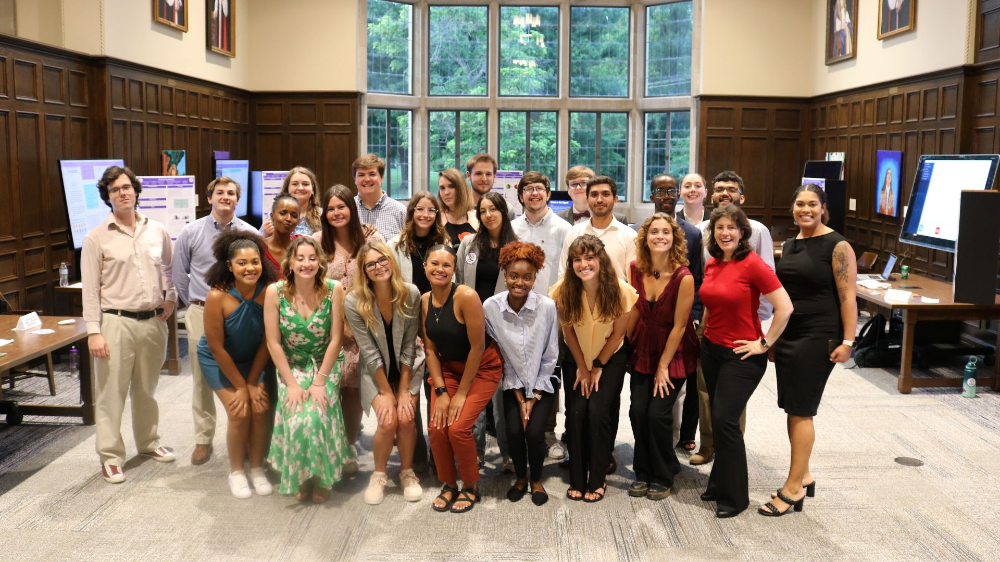
For our capstone project, I worked alongside Elizabeth Morris and Tilina Alzaban as we partnered with BetterFi, a nonprofit Community Development Financial Institution (CDFI) dedicated to helping individuals escape the cycle of predatory lending. BetterFi provides affordable alternatives to high-interest payday, title, and flex loans, giving underserved and underbanked communities access to safer financial products and a path toward long-term financial stability.
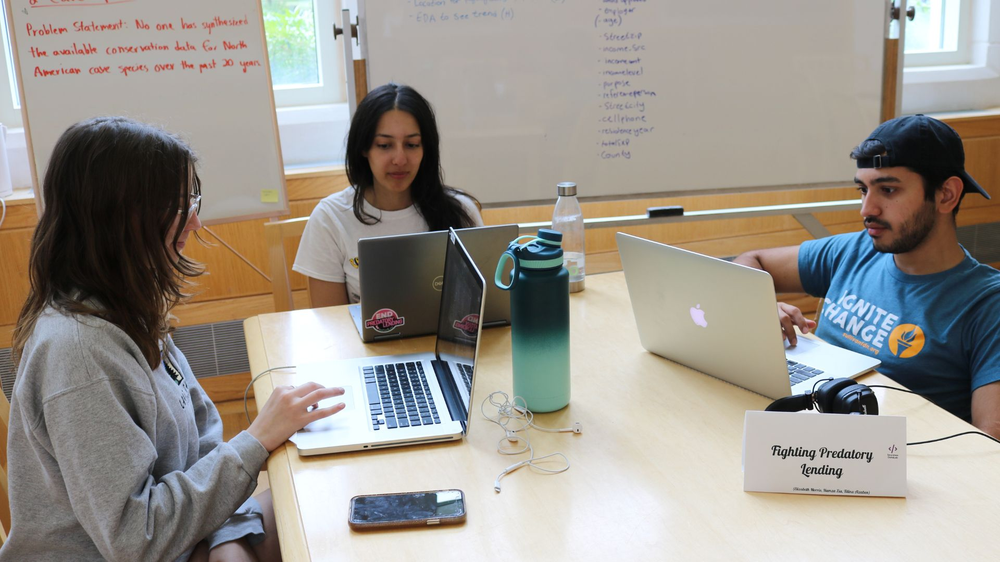
Our objective was to help BetterFi address a significant operational challenge. Loan applications were being evaluated manually on a case-by-case basis, making the review process both time-intensive and difficult to scale as the organization grew. Working closely with BetterFi, we designed and developed a decision-support toolkit that combined predictive modeling, interactive dashboards, geospatial analysis, and data quality recommendations. Rather than replacing human decision-making, the goal was to equip BetterFi with actionable insights that could streamline loan evaluations, improve consistency, and ultimately enable the organization to serve more people in communities most affected by predatory lending.
What is BetterFi?
BetterFi is a 501(c)(3) nonprofit and certified Community Development Financial Institution (CDFI) that works to combat predatory lending by providing affordable alternatives to payday, title, and flex loans. To help borrowers escape high-interest debt cycles, BetterFi refinances existing loans into lower-cost installment loans while also providing financial guidance that helps clients build long-term financial stability.
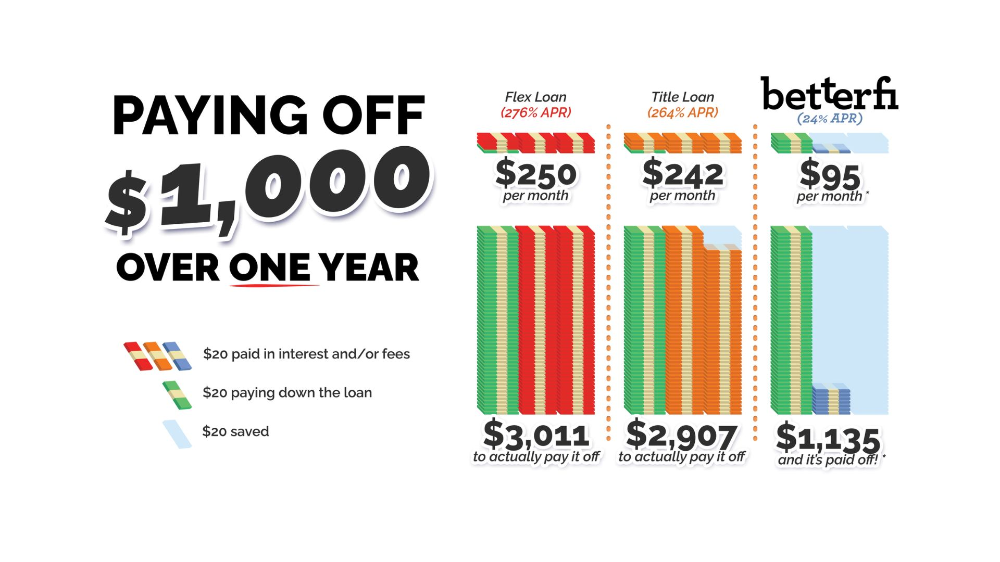
As we began researching the problem, the scale of predatory lending quickly became apparent. Tennessee consistently ranks among the states with the highest concentration of payday and title lenders, and at the time of our research there were more payday lending locations across the state than McDonald’s restaurants. For many families facing an unexpected expense, these loans may appear to offer immediate relief. In reality, however, triple-digit interest rates and excessive fees often trap borrowers in cycles of debt where monthly payments barely reduce the original loan balance. You can learn more about BetterFi by visiting BetterFi.co→
BetterFi's Bottleneck
BetterFi was already making a meaningful difference by offering a community-focused alternative, but as a small nonprofit with limited staff and resources, scaling that impact presented its own challenge. Every loan application was reviewed manually by a lending committee using historical client information and professional judgment. While this approach ensured careful consideration of each applicant, it was time-consuming, difficult to standardize, and increasingly challenging as the organization continued to grow.
Our Solution
To address BetterFi’s operational challenges, we designed and developed a decision-support toolkit that combined predictive modeling, interactive dashboards, geospatial analysis, and data quality recommendations into a single, cohesive solution. Rather than focusing on a single machine learning model, we approached the project from an operational perspective. BetterFi needed a practical system that could support lending decisions, uncover meaningful patterns in historical data, identify communities most affected by predatory lending, and establish a stronger foundation for future data-driven decision making. Our objective was never to replace the expertise of BetterFi’s lending committee—the toolkit was designed to complement the existing review process by streamlining loan evaluations and providing more consistent, data-informed recommendations.
The project was built using three anonymized datasets provided by BetterFi: client information, loan records spanning 2018 through 2022, and transaction data capturing repayment activity. To complement these internal datasets, we also incorporated external data on payday and title lending locations throughout Tennessee, along with county-level demographic and socioeconomic information. Together, these data sources allowed us to build a toolkit that not only assisted with individual lending decisions, but also provided broader operational and geographic insights that could help BetterFi expand its impact over time.
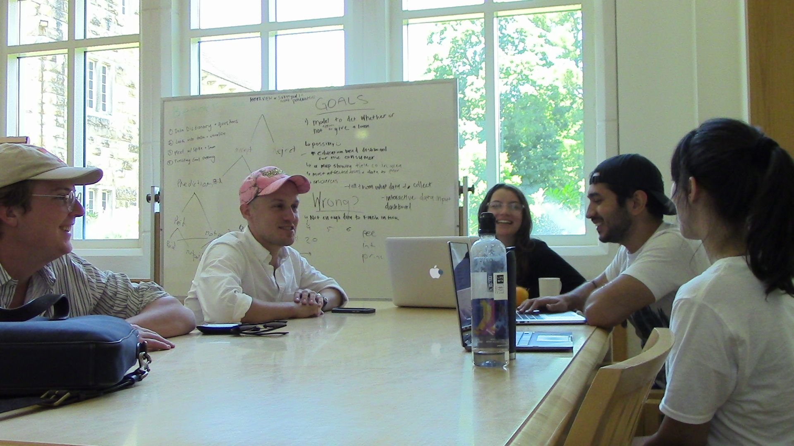
Team meeting with Spike Hosch—Executive Director of BetterFi
Predictive Model
The first major component of the toolkit was an interactive dashboard that integrated a predictive model into BetterFi’s loan review workflow. Loan officers could enter an applicant’s information and generate a repayment prediction showing the probability that a loan would either be paid in full or ultimately be charged off. Rather than replacing the lending committee’s judgment, the model was designed to provide an additional layer of objective, data-driven insight during the review process.
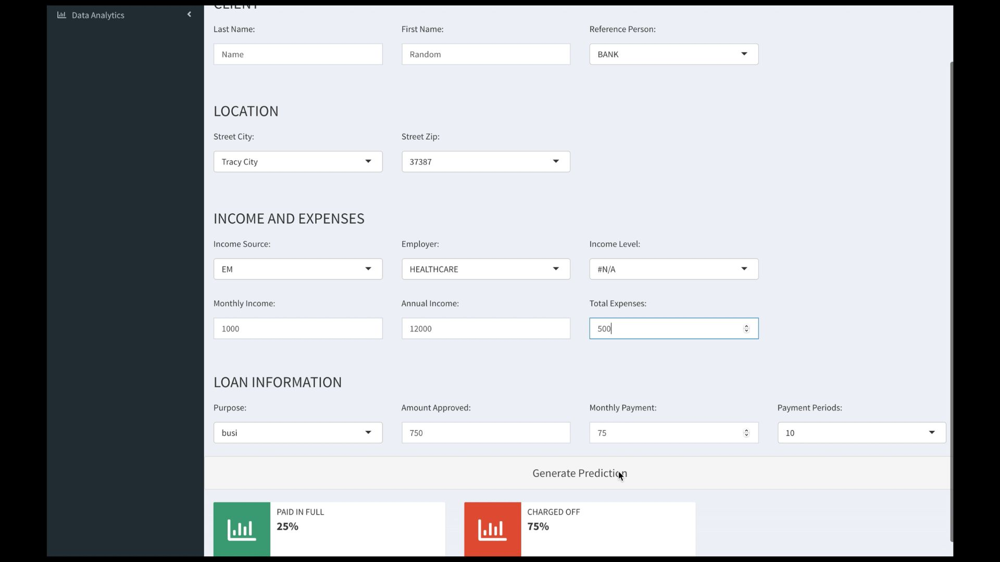
To develop the model, we trained and evaluated both logistic regression and decision tree classifiers. While logistic regression provided a strong statistical baseline, the decision tree consistently achieved better predictive performance while offering an important practical advantage: interpretability. Because every prediction could be traced through a series of decision rules, BetterFi staff could understand how different applicant characteristics influenced the recommendation, making the model easier to trust and incorporate into their existing decision-making process.
Building a reliable model required balancing predictive performance with the realities of the available data. The historical dataset contained a relatively small number of loan observations compared to the number of applicant characteristics available for training, increasing the risk of overfitting. To improve the model’s ability to generalize to new applicants, we evaluated performance using 10-fold cross-validation and limited the final model to variables that were both statistically informative and appropriate for lending decisions. The selected features captured several dimensions of an applicant’s financial profile, including income, expenses, employment, loan size, repayment schedule, and geographic location. Together, these variables provided insight into an applicant’s repayment capacity, existing financial obligations, and overall lending risk, while avoiding unnecessary model complexity. During evaluation, the decision tree correctly classified loan outcomes in approximately 86% of cases, demonstrating that historical lending data could provide meaningful support for future lending decisions while still complementing, rather than replacing, human expertise.
Interactive Dashboard for Data Insights
While the predictive model focused on individual loan applications, the second component of the toolkit provided BetterFi with an interactive analytics dashboard for exploring its historical client, loan, and transaction data. Rather than relying solely on case-by-case lending decisions, BetterFi could interact with their existing data to better understand client demographics, lending trends, repayment behavior, and overall portfolio characteristics.
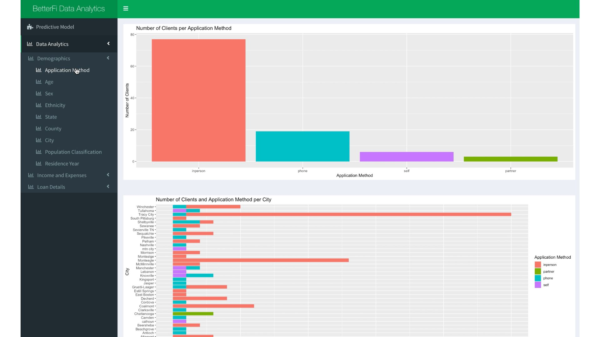
To make the dashboard intuitive to navigate, the visualizations were organized into three primary categories: Demographics, Income & Expenses, and Loan Details. The Demographics section allowed BetterFi to explore characteristics such as application method, age, sex, ethnicity, geographic location, and population classification, helping identify who their clients were and where they were coming from. The Income & Expenses section examined employment, income levels, income frequency, banking status, household expenses, vehicle ownership, and other financial characteristics that provided insight into applicants’ overall financial circumstances. Finally, the Loan Details section explored lending activity itself, including approved loan amounts, loan purposes, repayment status, payment schedules, reference information, and loan acceptance outcomes, providing a comprehensive view of how loans were being issued and repaid over time.
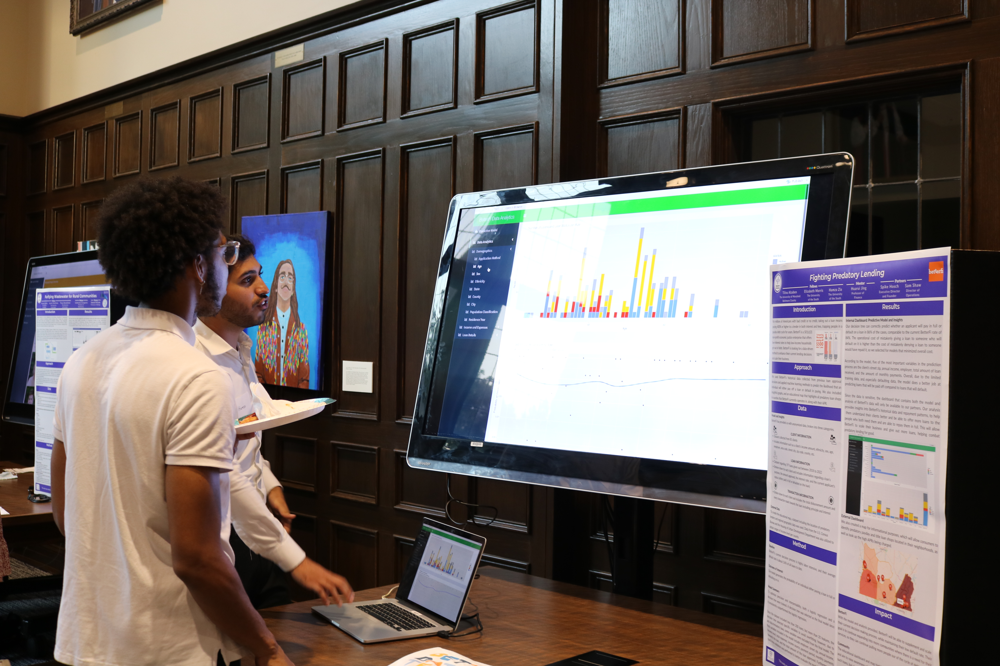
Together, these interactive visualizations transformed BetterFi’s historical data into an accessible decision-support resource. They could quickly explore relationships between applicant characteristics and repayment outcomes, identify trends across different loan types and financial profiles, and better understand the factors influencing lending performance. Beyond supporting day-to-day operations, the dashboard also helped identify which variables were most informative for future modeling efforts and provided a stronger analytical foundation for refining BetterFi’s lending strategy as the organization continued to grow.
Interactive Map of Predatory Lending Locations
The final analytical component of the project was an interactive geospatial dashboard designed to visualize the landscape of predatory lending across Tennessee. While the predictive model and analytics dashboard focused on BetterFi’s internal data, this map incorporated external datasets to provide a broader view of the communities BetterFi serves. By combining the locations of payday and title lenders with county-level demographic information, the map transformed raw geographic data into a practical planning and outreach tool.
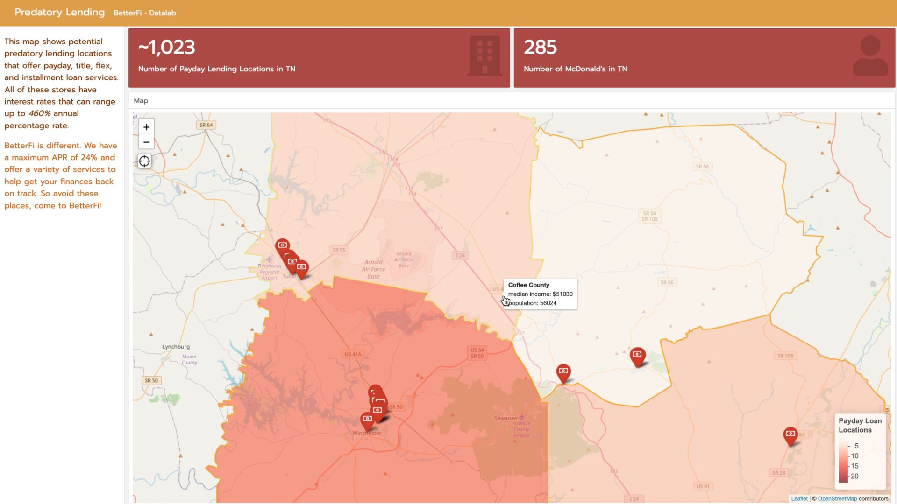
Users could explore potential predatory lending locations alongside county-level median household income, population statistics, and publicly available annual percentage rates (APRs). This provided valuable context for understanding where high-cost lending was most concentrated and how those locations related to the socioeconomic characteristics of surrounding communities. Rather than presenting these data independently, the dashboard brought them together into a single interactive visualization that made regional trends apparent.
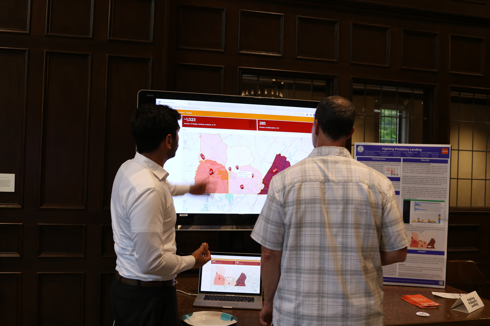
This component extended the project beyond operational efficiency and connected it directly to BetterFi’s broader mission of promoting financial equity. The map could serve as both an educational resource for the public and a strategic planning tool for the organization, helping identify underserved communities where outreach efforts, partnerships, and financial education initiatives could have the greatest impact. By visualizing the problem geographically, BetterFi was able to move beyond individual loan applications and better understand the communities most affected by predatory lending.
Data Quality Guidelines and Future Data Collection
One of the most important insights from the project was that predictive performance depends just as much on data quality as it does on model selection. As we worked with BetterFi’s data, we found that BetterFi collected applicant information through several different channels, including in-person interviews, phone applications, partner organizations, and online forms. While this provided valuable historical data, differences in data collection practices resulted in inconsistent formats, missing values, and varying levels of completeness, all of which limited the reliability of downstream analysis and the model’s ability to generalize to future applicants.
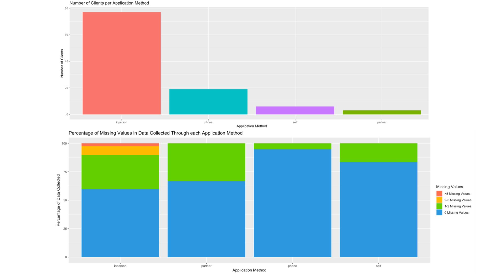
To address these challenges, we developed a set of data quality guidelines centered around three core principles: accuracy, consistency, and validation. Our recommendations included creating a standardized data dictionary to establish common definitions and formatting rules for every field, improving the application interface with clearer instructions and dropdown menus where appropriate, and implementing real-time validation checks to prevent incomplete or improperly formatted data from being entered into the system. We also recommended additional quality assurance for applications submitted in person and through partner organizations, where inconsistencies were more likely to occur. Together, these recommendations established a framework for collecting cleaner, more standardized data that would improve both operational reporting and future predictive modeling efforts.
Beyond improving the existing application process, we also identified several additional variables that could strengthen future analyses. These included education level, marital status, household dependents, number of income providers within a household, employment duration, employment history, and employment location. Collecting these variables would provide a more complete picture of an applicant’s financial stability while enabling future models to better capture the factors that influence repayment behavior. More broadly, this component of the project reinforced an important principle of applied data science: sustainable analytical systems depend not only on strong models, but also on well-designed data collection processes that continue to improve over time.
Conclusion
The fellowship concluded with a public showcase where each team formally presented its project to a live audience before transitioning into interactive demonstration booths. After delivering our presentation, we had the opportunity to discuss our work one-on-one with attendees, answer technical questions, and demonstrate the software we had built throughout the summer. Presenting both the broader story behind the project and the technical decisions that supported it was an incredibly rewarding experience, and seeing our work spark meaningful discussions reinforced the value of using data science to solve real-world problems.
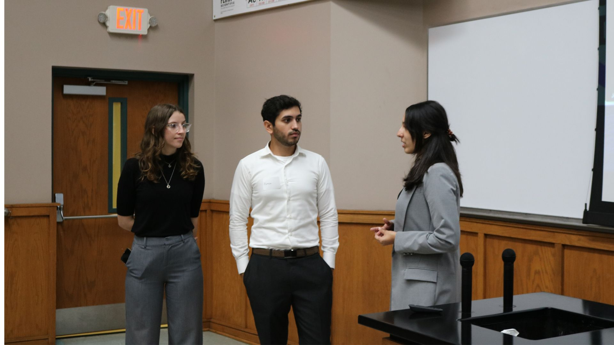
Beyond the technical skills I developed, this fellowship fundamentally changed the way I think about data science. Through workshops, seminars, and conversations with experienced data scientists and industry leaders, I gained exposure to modern machine learning techniques while learning how to translate technical concepts into practical solutions for organizations working to improve their communities. Just as importantly, I developed lasting friendships with an incredibly talented group of fellows whose curiosity, collaboration, and willingness to challenge one another made the experience just as valuable as the project itself.
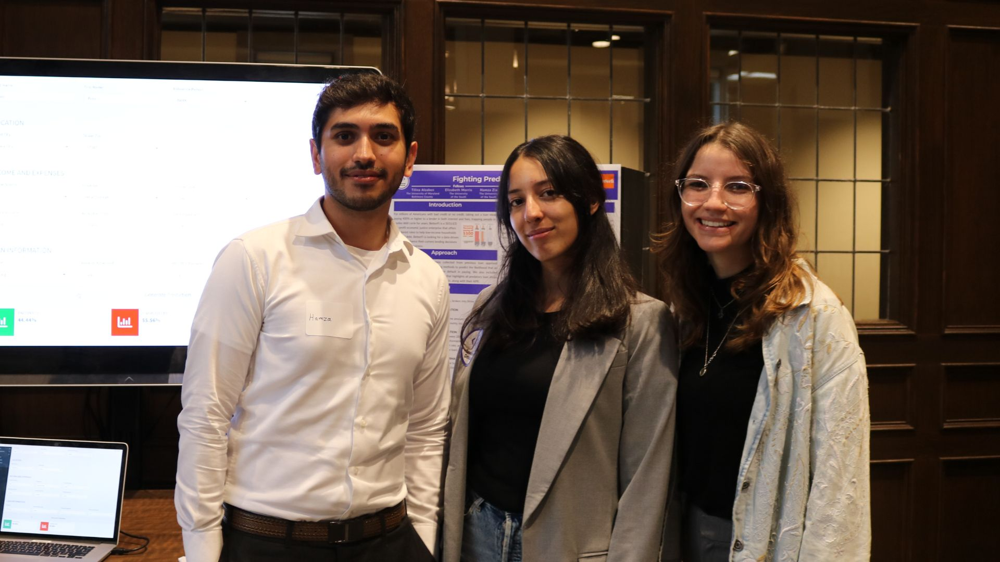
Looking back, BetterFi was much more than a machine learning project. The experience demonstrated that successful data science extends far beyond building predictive models. It requires understanding the people behind the data, designing solutions that integrate naturally into existing workflows, and recognizing that technology is most impactful when it helps organizations make better decisions. That perspective continues to shape how I approach every technical project today, and it remains one of the reasons I am passionate about applying modern data science and artificial intelligence to solve meaningful problems at an even larger scale.
Explore the complete project repository on GitHub →